Université Numérique du Gabon
Pôle Sciences et Techniques de l'Ingénieur (STI)
Filière Développement Web et Mobile · Licence 3
| Présenté par | MOUEMBANZA LOUNDOU Darly Freid |
| Encadreur | __________________________ |
| Année académique | 2026–2027 |
Je remercie d'abord l'équipe pédagogique de l'Université Numérique du Gabon, et en particulier les enseignants du pôle Sciences et Techniques de l'Ingénieur, dont les cours m'ont donné les bases nécessaires pour mener ce projet.
Ma reconnaissance va aussi à mon encadreur, pour le temps qu'il m'a consacré et pour ses remarques, qui m'ont obligé à clarifier plusieurs choix.
Je remercie enfin les personnes qui ont accepté de tester l'application et de me dire franchement ce qui n'était pas clair, ainsi que ma famille et mes proches, qui m'ont soutenu pendant les longues soirées de développement.
Ce projet consiste à concevoir et à réaliser une application web de gestion administrative scolaire, qui regroupe les dossiers d'élèves, les inscriptions, les frais de scolarité et leurs paiements, les présences, le pointage des enseignants et la consultation par les familles, avec un espace propre à chaque type d'utilisateur.
L'application est construite avec Next.js 15, React 18, TypeScript et Tailwind CSS 4, déployée sur Vercel, et s'appuie sur Supabase pour l'authentification et les principaux domaines métier raccordés à la base. Des références au stockage local subsistent dans certains modules : leur portée doit être appréciée page et service par page et service, plutôt que généralisée à toute l'application. Pendant le développement, j'ai réalisé des vérifications manuelles et ciblées ; le dépôt contient également quatre fichiers de tests Jest et plusieurs scripts de test manuel. En revanche, la totalité des scénarios de régression n'a pas pu être rejouée de manière fiable lors de la dernière revue. Le pointage et certains parcours de l'espace parent nécessitent encore une validation complète.
Mots-clés : gestion scolaire, application web, rôles et permissions, Supabase, Next.js, inscriptions et paiements.
| Sigle | Signification |
|---|---|
| API | Interface de programmation applicative |
| CSS | Feuilles de style en cascade |
| CSV | Valeurs séparées par des virgules (format de fichier tabulaire) |
| ERD | Diagramme entité-relation (modèle de données) |
| FCFA | Franc de la Coopération Financière en Afrique centrale |
| HTML | Langage à balises qui décrit la structure d'une page web |
| HTTPS | Protocole HTTP sécurisé par chiffrement |
| JSON | Format texte d'échange de données |
| QR code | Code-barres à deux dimensions, lisible avec un téléphone |
| RLS | Sécurité au niveau des lignes (règles d'accès appliquées ligne par ligne dans la base) |
| RPC | Appel de procédure à distance ; ici, fonction SQL appelée depuis l'interface |
| SQL | Langage de requêtes pour bases de données relationnelles |
| STI | Sciences et Techniques de l'Ingénieur |
| UML | Langage de modélisation unifié |
| UNG | Université Numérique du Gabon |
| UI / UX | Interface utilisateur / expérience utilisateur |
Dans un établissement scolaire, presque aucune tâche administrative ne se fait seule. Inscrire un élève suppose d'ouvrir son dossier, de le placer dans une classe, de calculer ce que sa famille doit payer, puis de suivre ses paiements, ses présences et ses résultats pendant toute l'année. Quand ces opérations reposent sur des registres papier, des tableurs et des messages échangés au fil de l'eau, une information mise à jour à un endroit et oubliée à un autre suffit à rendre un dossier incohérent.
C'est à partir de ce constat que j'ai choisi comme projet de fin de licence la conception et la réalisation d'une application web de gestion administrative scolaire, présentée sur sa page d'accueil sous le nom NOVA. L'idée est de regrouper dans un même outil les dossiers des élèves, les inscriptions, les frais, les présences, les notes et la communication avec les familles, et de donner à chacun un accès adapté à son rôle : un parent n'a pas à voir ce que voit la comptabilité, et un enseignant n'a pas à ouvrir les données d'un autre établissement.
La question à laquelle ce travail répond est la suivante : comment concevoir et réaliser une application web qui centralise la gestion administrative d'un établissement scolaire tout en limitant l'accès de chaque utilisateur à ce que son rôle l'autorise à voir ?
J'ai examiné le code de la branche main du dépôt applicatif (commit d7905796b35dc7729c08b62c9aee7df39a523ef4) et l'état de la base Supabase liée le 28 octobre 2026. Je décris les choix que j'ai faits et les éléments présents dans le code : une migration SQL ne suffit pas à prouver qu'un parcours est achevé, mais l'absence d'une case cochée dans un ancien fichier Markdown ne signifie pas non plus que la fonctionnalité n'existe pas. Pour chaque domaine, je distingue donc l'interface, le branchement au backend et le niveau de vérification disponible.
Le plan suit le déroulement du projet. La première partie pose le contexte et les objectifs. La deuxième présente les besoins, les règles de gestion et le modèle de données. La troisième décrit les espaces de l'application, de la connexion à l'espace parent. La quatrième traite de l'architecture, de la sécurité et des tests. La cinquième dresse le bilan, avec ses limites et les suites envisagées.
Vocabulaire. Le produit emploie l'expression « année académique » (table academic_years). Je la conserve dans tout le document pour désigner la période de référence d'une inscription, et je réserve « période » aux subdivisions de cette année (trimestres ou semestres).
La gestion d'une école ne s'arrête pas pendant l'année scolaire. Elle commence avec les inscriptions et les réinscriptions, se poursuit avec la répartition des élèves par niveau et par classe, puis avec le suivi des frais de scolarité, des présences et des évaluations. À cela s'ajoutent, selon les établissements, la gestion du personnel enseignant, le contrôle des heures effectuées et la communication avec les familles.
Chaque dossier d'élève réunit des éléments de natures différentes : identité, responsables légaux, parcours scolaire, situation financière, absences. Ils sont tenus par des personnes différentes, à des moments différents. C'est cette dispersion qui crée des difficultés.
Lorsque les informations sont réparties entre plusieurs supports, une même donnée doit être recopiée à plusieurs endroits, ce qui prend du temps et multiplie les erreurs. Retrouver l'historique des paiements d'un élève ou son nombre d'absences sur un trimestre oblige à consulter plusieurs sources. Les soldes calculés à la main se trompent facilement, surtout lorsque des réductions familiales ou des prises en charge par un organisme entrent en jeu. Enfin, les familles et les enseignants n'ont pas d'accès direct et encadré à ce qui les concerne.
Ces difficultés varient d'un établissement à l'autre. Une application n'en supprime pas la totalité ; elle peut en réduire une partie, à condition d'être construite à partir des gestes réels du personnel et de rester fiable sur les montants et les droits d'accès.
La question de départ a trois dimensions. Sur le plan fonctionnel, il faut déterminer les opérations à prendre en charge et leur enchaînement. Sur le plan technique, il faut choisir une architecture qui garantisse la cohérence des données et l'isolation entre établissements. Sur le plan organisationnel, il faut séparer les accès selon les rôles sans rendre l'usage pénible.
L'objectif général est de réaliser une application web de gestion administrative scolaire. Il se décline en objectifs précis, formulés pour pouvoir être vérifiés dans le code :
Le projet couvre une application web responsive déployée sur Vercel, avec Supabase pour l'authentification et les données des modules raccordés au backend. L'application a évolué au fil du développement : je vérifie donc chaque domaine à partir de ses pages, hooks, services et migrations, au lieu de généraliser à partir d'un README ancien. Les dossiers android, ios et electron présents dans le dépôt ne suffisent pas, à eux seuls, à considérer une application mobile native ou une version de bureau comme livrée.
L'application distingue quatre types de compte, renvoyés par la fonction get_my_auth_context : administrateur de plateforme, membre d'un établissement, enseignant et parent. Parmi les membres d'un établissement, la base de données reconnaît sept rôles : propriétaire (owner), administrateur (admin), direction (director), secrétariat (secretary), comptabilité (accountant), surveillance (supervisor) et enseignant (teacher). Le tableau 1 résume ces profils à partir des permissions réellement codées dans la fonction SQL private.has_permission.
| Profil | Compte ou rôle dans le code | Responsabilités principales | Limites relevées |
|---|---|---|---|
| Administrateur de plateforme | Compte platform_admin (table platform_admins) | Gère les établissements, les abonnements, les administrateurs et les demandes de support. | Satisfait tous les tests de permission ; hiérarchie de permissions propre (migration platform_admin_hierarchy). |
| Propriétaire, administrateur, direction | Rôles owner, admin, director | Gestion globale de l'établissement : membres, structure académique, élèves, inscriptions, frais, paiements, notes, présences, personnel, rapports. | Les trois rôles ont exactement les mêmes permissions dans has_permission. |
| Secrétariat | Rôle secretary | Structure académique, élèves, inscriptions ; lecture des présences ; rapports. | Pas de permission d'écriture sur les paiements. |
| Comptabilité | Rôle accountant | Frais de scolarité, paiements, rapports. | Pas de lecture des élèves via students.read ; pas d'accès aux notes. |
| Surveillance | Rôle supervisor | Lecture des élèves et des inscriptions ; présences et pointage. | Pas d'accès financier ni aux notes. |
| Enseignant | Rôle teacher ou compte teacher lié par teacher_establishments | Consultation des élèves, appel, saisie des notes, cahier de textes, pointage de ses cours. | Un enseignant peut être rattaché à plusieurs établissements après une demande approuvée. |
| Parent | Compte parent lié aux élèves par student_guardians | Consulte la situation de ses enfants, signale une absence, demande un document. | Accès limité aux élèves auxquels son compte est lié ; cadre à tester (chapitre 8). |
Source : lib/supabase/types/roles.ts, supabase/migrations/20260903214000_fix_enrollment_read_permissions.sql.
Les rôles personnalisés (table establishment_roles et establishment_role_permissions) existent aussi : un établissement peut définir ses propres rôles. Le code du navigateur utilise un registre de permissions plus détaillé (dashboard.view, students.edit, payments.refund, etc.) que celui de la fonction SQL (students.read, students.manage, payments.manage…). La correspondance exacte entre les deux nomenclatures n'a pas été vérifiée jusqu'au bout ; elle figure parmi les limites du chapitre 9.
Le tableau 2 liste les besoins fonctionnels retenus. La colonne de droite indique ce qui, dans le dépôt, correspond à chacun ; elle ne dit pas que la fonction est validée, ce que traite le chapitre 8.
| N° | Besoin | Éléments du dépôt |
|---|---|---|
| BF1 | S'authentifier et récupérer son contexte (compte, établissement, rôle) | Supabase Auth ; RPC get_my_auth_context ; page /connexion |
| BF2 | Gérer les comptes et les rôles d'un établissement | Fonctions Edge manage-school-user-account, create-establishment-super-admin ; /ecole/settings |
| BF3 | Gérer les dossiers d'élèves et leurs responsables légaux | RPC create_student, update_student, list_students_paginated ; /ecole/students |
| BF4 | Inscrire, réinscrire et transférer un élève | Pages /ecole/inscriptions/* ; RPC d'inscription, create_student_transfer, finalize_student_transfer |
| BF5 | Organiser années académiques, cycles, niveaux, classes, matières, emplois du temps | Hooks useAcademicStructure, useClasses ; services matieres et emploi-du-temps |
| BF6 | Définir les frais, plans de paiement et échéanciers | RPC create_tuition_plan_with_billing ; tables tuition_plans, payment_schedules |
| BF7 | Enregistrer les paiements et recalculer le solde | RPC create_payment_with_allocations, get_payment_summary |
| BF8 | Appliquer des réductions familiales et des prises en charge | Tables school_families, family_discount_rules, sponsoring_organizations ; migration organizations_family_discounts |
| BF9 | Enregistrer les présences et gérer les justificatifs | RPC record_attendance, request_attendance_justification, review_attendance_justification |
| BF10 | Pointer l'arrivée, le départ et les cours du personnel enseignant | Migrations pointage_* ; RPC pointage_* ; /ecole/personnel/pointage |
| BF11 | Saisir évaluations et notes ; produire des bulletins | Services notes, evaluations ; /ecole/notes/* |
| BF12 | Suivre le personnel, les avances et la paie | RPC generate_payroll_period, create_payroll_payment ; /ecole/finance/paie |
| BF13 | Publier et demander des documents scolaires | Tables documents, parent_document_requests ; stockage school-documents, parent-documents |
| BF14 | Communiquer : notifications, messagerie, événements | Tables notifications, conversations, messages, school_events |
| BF15 | Offrir un espace parent | Pages /parents/* ; hook use-parent-portal |
| BF16 | Administrer la plateforme : établissements, abonnements, support | Pages /admin/* ; RPC platform_admin_* |
Les exigences non fonctionnelles sont distinguées des besoins fonctionnels : elles décrivent des qualités attendues, et non des fonctions. Le tableau 3 indique, pour chacune, ce qui a été constaté et ce qui reste à démontrer.
| N° | Exigence | Constat dans le dépôt | Limite |
|---|---|---|---|
| EX1 | Sécurité et confidentialité | Authentification obligatoire ; fonctions SQL avec contrôle de rôle ; politiques RLS dans les migrations. | Contrôle réel côté base non testé (chapitre 8). |
| EX2 | Isolation par établissement | Colonne establishment_id et appels à private.has_permission dans les politiques. | Test croisé entre deux établissements non réalisé. |
| EX3 | Cohérence des montants | Paiement et affectation créés dans une seule fonction SQL. | Scénarios de solde non rejoués. |
| EX4 | Utilisation sur téléphone | Mise en page responsive avec Tailwind CSS ; manifeste d'application web et service worker. | Affichage sur téléphone non vérifié. |
| EX5 | Traçabilité | Table audit_logs ; historique des événements de pointage. | Couverture de l'audit non mesurée. |
| EX6 | Performance | Fonctions de liste paginées côté serveur (list_*_paginated). | Aucune mesure de charge. |
| EX7 | Maintenabilité | Organisation page, hook, service ; types TypeScript. | Quatre fichiers de tests seulement ; erreurs de types ignorées au build (chapitre 7). |
Seules les règles que le code applique réellement sont retenues dans le tableau 4. Chaque règle renvoie à sa source. Une règle présente dans une ancienne feuille de route mais absente du code n'y figure pas.
| N° | Règle | Source |
|---|---|---|
| RG1 | Un paiement est enregistré par un utilisateur authentifié ayant l'un des rôles owner, admin, director ou accountant. | RPC create_payment_with_allocations |
| RG2 | Un paiement vise une seule échéance, et le total des affectations est égal au montant payé ; le montant est strictement positif. | Migration 20260930013000_fix_enrollment_schedule_and_sequential_payments |
| RG3 | Les paiements d'un échéancier suivent un ordre séquentiel. | Même migration (paiements séquentiels) |
| RG4 | Une famille est une entité explicite : les élèves y sont rattachés par student_family_members, et non par ressemblance de noms. | Migration 20261011210000_organizations_family_discounts |
| RG5 | Une règle de réduction familiale précise un nombre minimal d'enfants, un type (pourcentage ou montant fixe) et des catégories de frais ; chaque réduction appliquée est conservée dans un instantané par inscription. | Même migration (family_discount_rules, enrollment_discount_snapshots) |
| RG6 | Une prise en charge par un organisme exige un organisme actif ; elle est calculée par catégorie et conservée dans un instantané. | Même migration (organization_coverage_rules, organization_coverage_snapshots) |
| RG7 | Le mode de prise en charge d'une inscription vaut family, state ou other ; le mode state exige que l'établissement l'ait activé. | Migration 20261010150000_fix_enrollment_funding_and_orphans |
| RG8 | Une réduction familiale ou une prise en charge partielle ne s'applique qu'après l'enregistrement de l'inscription ; les paiements viennent ensuite. | Message d'erreur de la migration 20261011210000 |
| RG9 | Un justificatif d'absence ne peut être demandé que pour un élève lié à un compte parent actif ; sa revue est réservée à un membre de l'établissement qui n'est pas un parent ; le statut vaut approved ou rejected. | Migrations 20261008123000 et 20261008143000 |
| RG10 | Le pointage reconnaît quatre événements (arrival, departure, course_start, course_end) ; il exige le droit attendance.manage ; le code personnel est comparé par empreinte ; seul un enseignant peut pointer un début ou une fin de cours ; un cours déjà clôturé ne peut pas l'être de nouveau. | Migrations pointage_course_lifecycle_and_audit, pointage_security_and_admin_actions |
| RG11 | Les données métier portent l'identifiant de leur établissement et les politiques d'accès le comparent aux droits de l'utilisateur. | Politiques des migrations (appels à private.has_permission) |
Le relevé direct de la base Supabase liée au projet montre 87 tables dans le schéma public, toutes avec la sécurité par ligne (RLS) activée, 226 politiques RLS et 232 fonctions SQL. Ces chiffres décrivent le schéma actuellement déployé ; ils ne prouvent pas, à eux seuls, que chaque opération est correctement protégée ou que l'interface utilise chaque objet.
Le dépôt applicatif versionne 91 fichiers SQL sous supabase/migrations, tandis que l'historique des migrations de la base active comporte 228 entrées au moment du relevé. Ces deux nombres ne sont pas interchangeables : ils montrent que l'historique appliqué en base est plus large que les seuls fichiers actuellement versionnés dans le dépôt. Cette différence limite la reproductibilité complète du schéma à partir du dépôt seul. Les relations dessinées ci-dessous sont donc de deux sortes. Un trait plein est une clé étrangère déclarée dans un fichier de migration du dépôt. Un trait pointillé est une relation observée dans les requêtes SQL des migrations, sans que la déclaration de la contrainte figure dans le dépôt. Aucune relation n'a été ajoutée par déduction à partir des seuls noms de colonnes.
La figure 1 regroupe les tables en sept domaines. Les cinq figures suivantes détaillent les relations centrales, domaine par domaine, sans reproduire les 87 tables : elles se limitent aux tables nécessaires à la compréhension du reste du dossier.
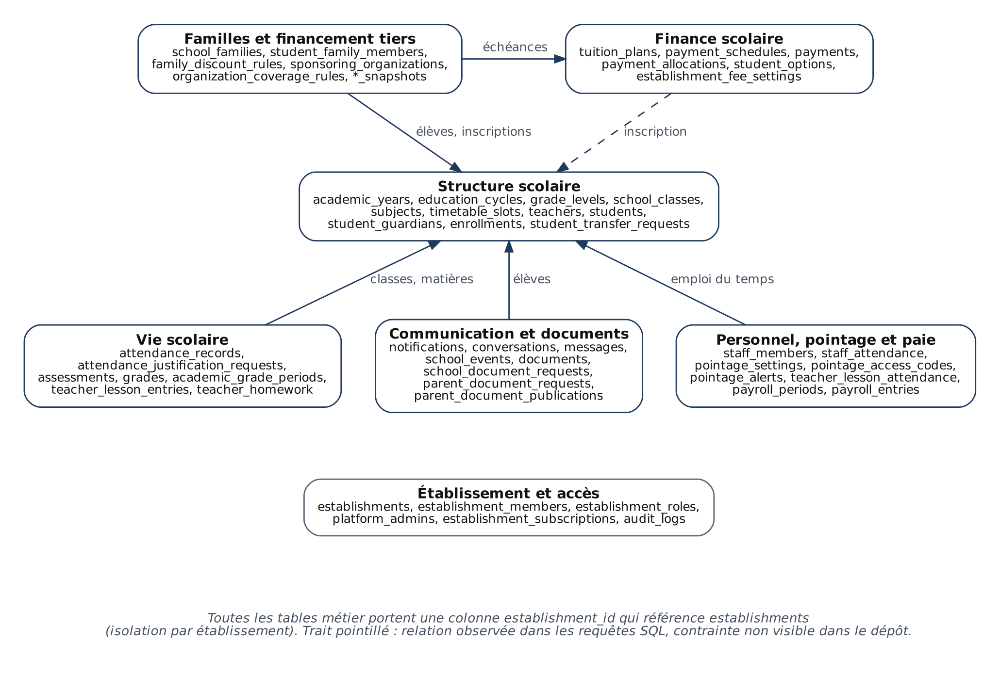
Les inscriptions, les échéanciers et les paiements (figure 2) forment le cœur financier : un paiement est affecté à des échéances (payment_allocations), et ces échéances appartiennent à une inscription. Les familles et les organismes payeurs (figure 3) se greffent sur ce cœur au moyen d'instantanés qui conservent, pour chaque inscription, la réduction ou la prise en charge appliquée.
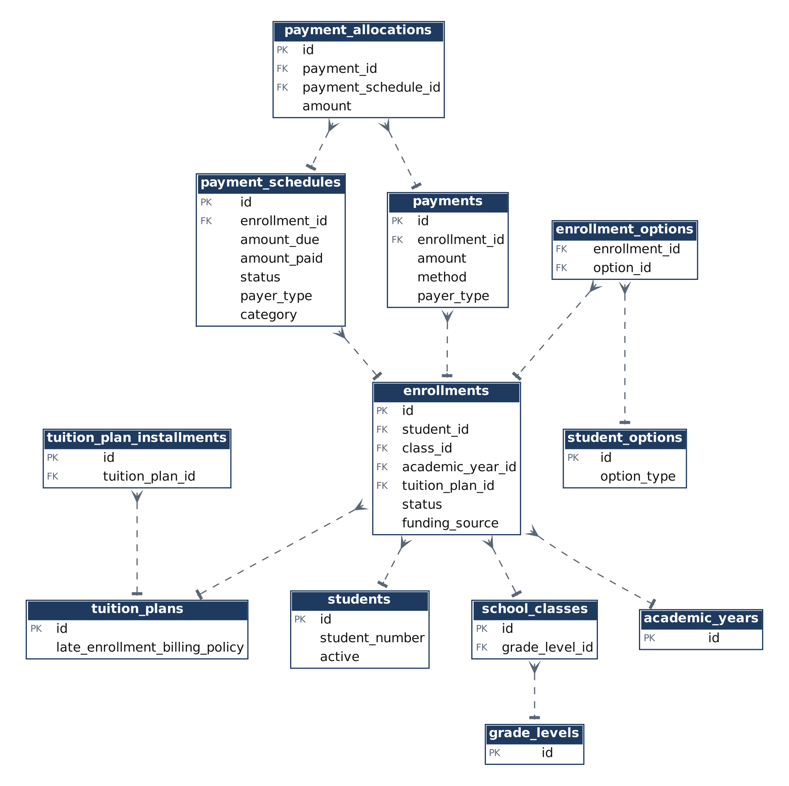
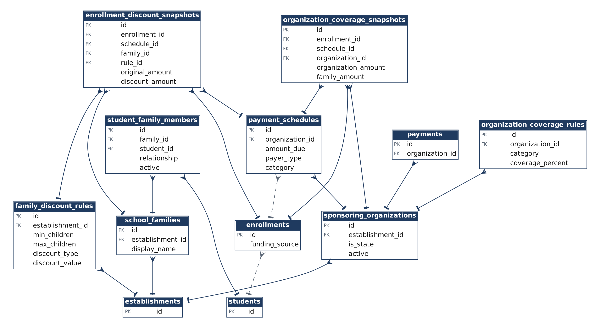
La vie scolaire (figure 4) rassemble les présences, leurs justificatifs, les notes et les documents. Les enseignants et le cahier de textes sont représentés à part (figure 5), de même que le pointage (figure 6), dont les tables sont toutes créées par des migrations du dépôt.
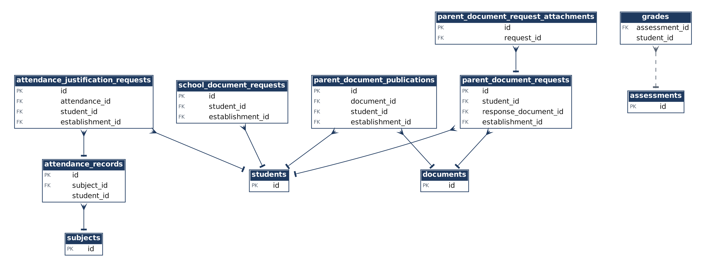
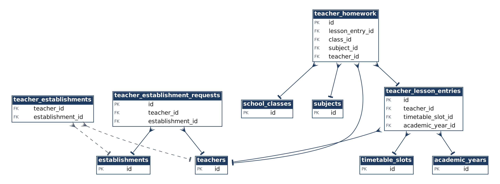
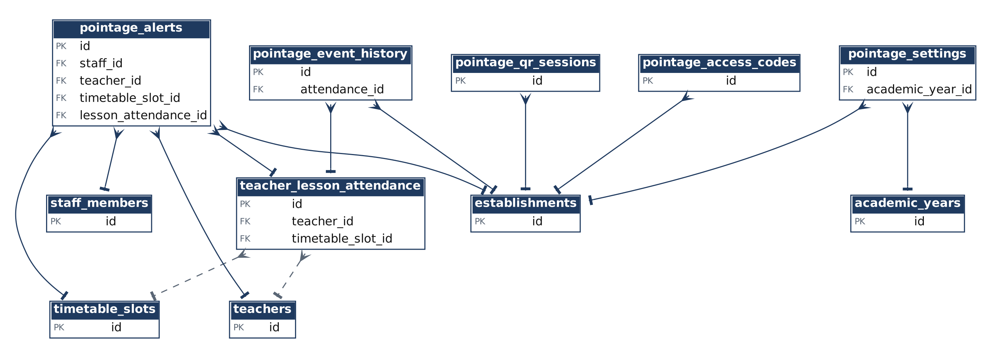
| Tables | Rôle | Domaine |
|---|---|---|
establishments, establishment_members | Établissements et appartenance des utilisateurs, avec leur rôle | Établissement et accès |
academic_years, grade_levels, school_classes | Années académiques, niveaux, classes | Structure scolaire |
students, student_guardians | Élèves et responsables légaux liés à un compte | Structure scolaire |
enrollments | Inscription d'un élève à une classe pour une année académique | Structure scolaire |
tuition_plans, payment_schedules | Plans de frais et échéances d'une inscription | Finance scolaire |
payments, payment_allocations | Paiements et leur affectation à des échéances | Finance scolaire |
school_families, student_family_members | Familles et rattachement explicite des élèves | Familles et financement tiers |
family_discount_rules, sponsoring_organizations | Règles de réduction et organismes payeurs | Familles et financement tiers |
attendance_records, attendance_justification_requests | Présences et demandes de justification | Vie scolaire |
assessments, grades | Évaluations et notes | Vie scolaire |
pointage_*, teacher_lesson_attendance | Codes, sessions QR, événements, alertes, séances de cours | Personnel, pointage et paie |
notifications, conversations, documents | Communication et documents scolaires | Communication et documents |
La figure 7 présente les acteurs confirmés et les actions que le code leur ouvre. Tous les acteurs ne sont pas reliés à tous les cas : par exemple, seul l'enseignant pointe un début ou une fin de cours, et seul le parent dépose un justificatif. La direction est représentée comme une spécialisation de l'administrateur d'établissement, parce que la fonction private.has_permission leur donne les mêmes permissions. Le cas « gérer personnel et paie » est inscrit tel que le code l'expose ; son niveau de validation est discuté au chapitre 8.
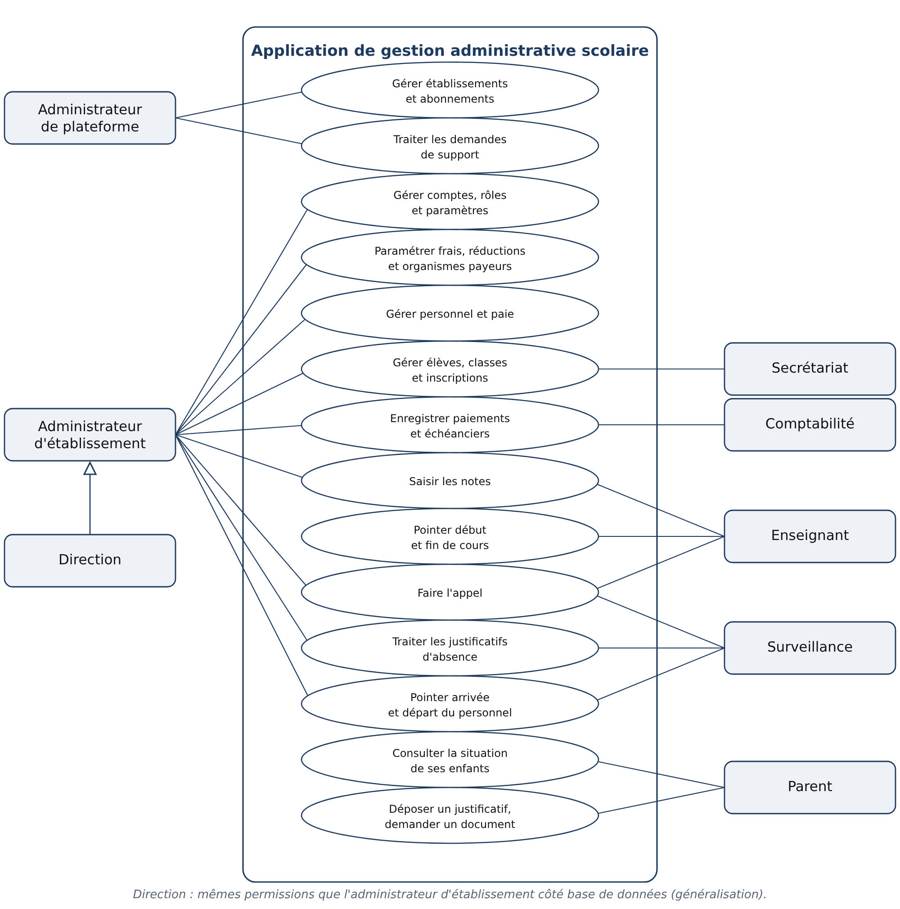
L'application est déployée sur Vercel à l'adresse syst-me-administratif-scolaire.vercel.app. Au 14 octobre 2026, une requête sur cette adresse renvoie la page d'accueil publique, intitulée « NOVA — Système de Gestion Scolaire », qui présente trois espaces (établissement, enseignant, parent) et un bouton de connexion. Le rapprochement entre la version en ligne et le dernier commit de main n'a pas pu être confirmé depuis l'extérieur.
L'authentification utilise Supabase Auth. Après la saisie de l'adresse électronique et du mot de passe, le fournisseur d'authentification de l'application appelle signInWithPassword, puis la fonction SQL get_my_auth_context, qui renvoie le type de compte, les établissements de l'utilisateur et son rôle. Un compte pour lequel aucun contexte n'est renvoyé est immédiatement déconnecté, avec le message « Votre compte n'est pas encore configuré ». La figure 9 détaille ces étapes. La figure 8 présente la page de connexion.
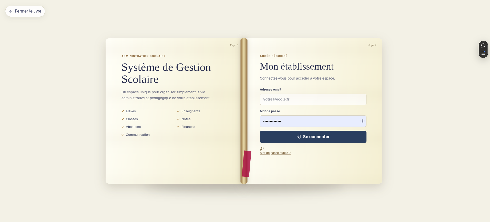
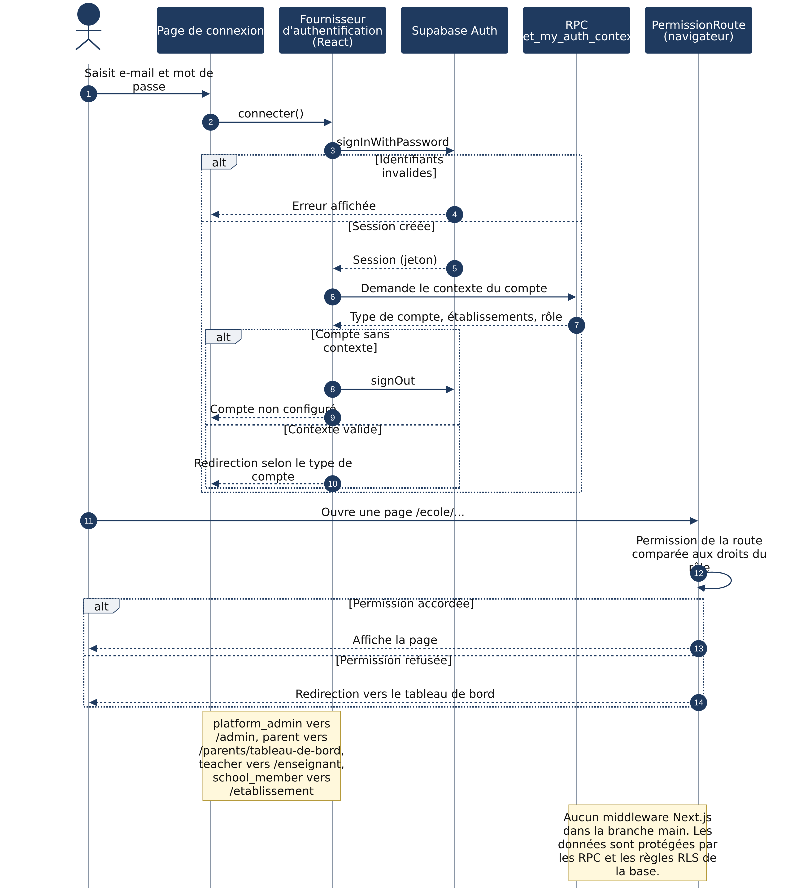
Ce que le contrôle d'accès est, et ce qu'il n'est pas. Selon le type de compte, l'utilisateur est redirigé vers /admin, /etablissement, /enseignant ou /parents/tableau-de-bord. Pour l'espace établissement, un composant nommé PermissionRoute compare la permission associée à la route aux droits du rôle et redirige vers le tableau de bord en cas de refus. Ce contrôle s'exécute dans le navigateur. Le dépôt ne contient pas de fichier middleware Next.js, alors qu'une ancienne feuille de route (IMPLEMENTATION-ECOLE.md) en mentionne un. La protection réelle des données repose donc sur les fonctions SQL et sur les politiques RLS, point développé au chapitre 7.
La récupération du mot de passe passe par un code à usage unique envoyé par courriel (page /auth/mot-de-passe-oublie).
L'espace /admin sert à l'administration générale : liste et fiche des établissements, création d'un établissement, abonnements, administrateurs, enseignants, parents, demandes d'établissement et service technique. Il s'appuie sur une quinzaine de fonctions SQL préfixées platform_admin_ et sur des fonctions Edge (create-platform-admin, create-establishment-super-admin). Une tâche planifiée Vercel appelle chaque jour à 7 h (UTC) la route interne /api/internal/subscription-monitor, qui contrôle les échéances d'abonnement. La page de paramètres de cet espace (/admin/parametres) reste lue depuis le stockage local.
L'espace /ecole est le plus étendu : l'analyse statique y relève une soixantaine de pages. Il regroupe le tableau de bord, les élèves, les inscriptions, les classes et matières, l'emploi du temps, les notes, le registre d'appel, le personnel et le pointage, les finances, les documents, la communication et les paramètres. Les utilisateurs de rôle propriétaire, administrateur ou direction y disposent de tous les modules, les autres rôles de ceux que leurs permissions autorisent. La figure 10 présente le tableau de bord.
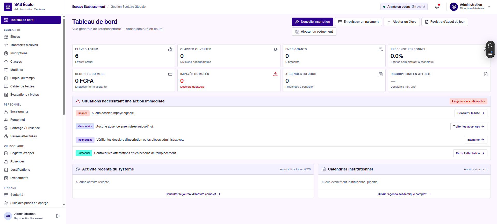
Les paramètres scolaires (/ecole/settings) permettent de définir l'année académique, les niveaux et la structure des classes, les frais, les options, les prises en charge et les utilisateurs. La figure 11 présente la structure scolaire.
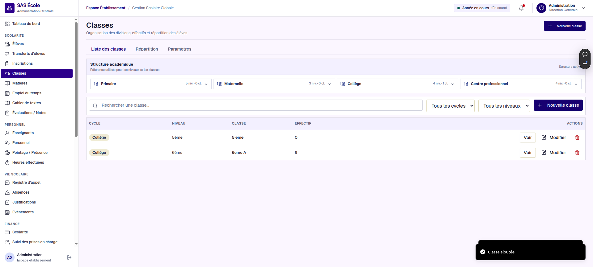
La liste des élèves est paginée côté serveur (list_students_paginated) avec recherche et filtres. Le dossier d'un élève rassemble son identité, ses responsables légaux, sa classe et ses inscriptions. Les opérations de création, de mise à jour et de désactivation passent par des fonctions SQL (create_student, update_student, deactivate_student) qui vérifient les droits. Un import CSV d'élèves pris en charge par l'État existe aussi (import_state_students). La figure 12 présente la liste et à la fiche d'un élève, avec des données fictives.
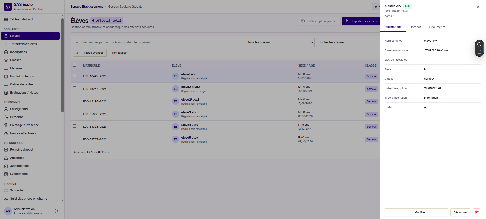
Le formulaire d'inscription suit l'ordre de travail du secrétariat : recherche d'un dossier existant pour éviter les doublons (find_duplicate_student_for_enrollment), choix de l'année académique, de la classe et du plan de frais, options facultatives, puis enregistrement par une fonction SQL unique, qui crée l'élève s'il est nouveau, l'inscription et l'échéancier. Lorsque l'élève est un frère ou une sœur d'un élève déjà inscrit, ou lorsqu'un organisme prend en charge une partie des frais, l'inscription est d'abord enregistrée seule ; les réductions et prises en charge sont ensuite calculées, et les paiements sont saisis dans le module des finances (règle RG8). La figure 13 décrit ce parcours, y compris les refus du serveur, dont les messages d'erreur sont ceux du code.
La variante avec famille (create_student_enrollment_with_family_funding) transmet en plus l'élève apparenté, le lien de parenté et l'organisme. Le dernier commit du dépôt porte précisément sur la confirmation du code famille de l'enfant associé : cette partie évolue encore.
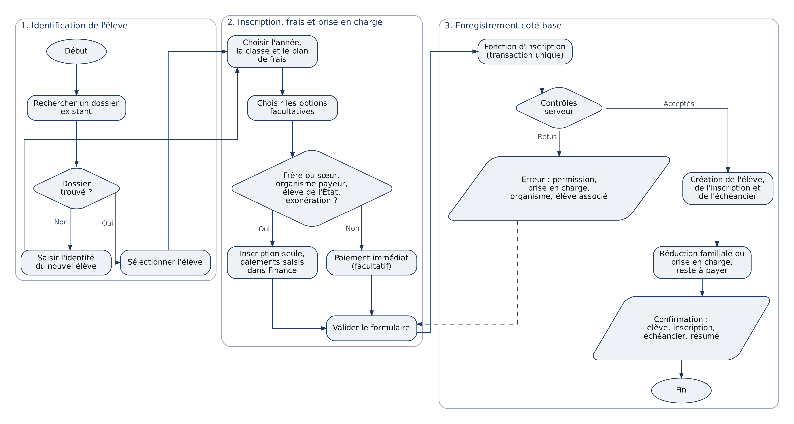
Le transfert d'un élève entre établissements est géré comme une demande avec approbation (create_student_transfer, review_student_transfer, finalize_student_transfer), l'approbation étant séparée de l'inscription proprement dite (migration 20261011190000). La réinscription conserve le dossier existant et crée une nouvelle inscription pour l'année académique suivante ; une fonction de progression académique (get_student_next_academic_progression) propose la classe suivante. La figure 14 présente la liste des dossiers d'inscription, avec la colonne des responsables floutée.
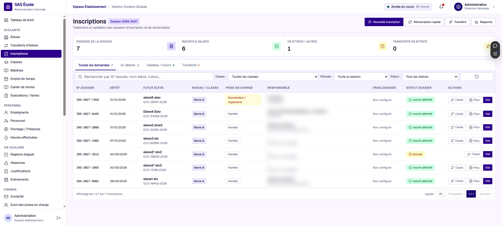
Les cycles, niveaux, classes, matières et créneaux d'emploi du temps sont lus et écrits dans la base (services classes.supabase.service.ts, matieres.supabase.service.ts, emploi-du-temps.supabase.service.ts). Plusieurs commits du 11 octobre corrigent les effectifs, la répartition par niveau et le contexte d'établissement de la page des classes : ce module est donc stable depuis peu. La page des classes référence encore à la fois le stockage local et Supabase.
Les évaluations et les notes passent par des services branchés sur la base (evaluations.service.ts, notes.service.ts, periodes-notes.service.ts), avec des périodes de notes par année académique. Les pages /ecole/notes/saisie, /ecole/notes/bulletins et /ecole/notes/statistiques existent. La page /ecole/evaluation, en revanche, lit encore des données locales. Du côté parent, la feuille de route PARENT-TODO.md laisse non cochés les bulletins, leur téléchargement et le classement : je les considère comme non démontrés.
Un plan de frais (tuition_plans) fixe, pour une année académique et un niveau, un mode de paiement et un montant ; ses échéances sont créées côté serveur (create_tuition_plan_with_billing). Chaque inscription reçoit un échéancier (payment_schedules). Pour enregistrer un paiement, l'interface appelle create_payment_with_allocations, fonction SQL unique, donc exécutée dans une seule transaction, qui vérifie le rôle, le montant, l'unicité de l'échéance visée et l'ordre séquentiel, puis insère le paiement et son affectation. Le solde affiché provient de get_payment_summary et get_enrollment_financial_summary. La figure 15 décrit la séquence.
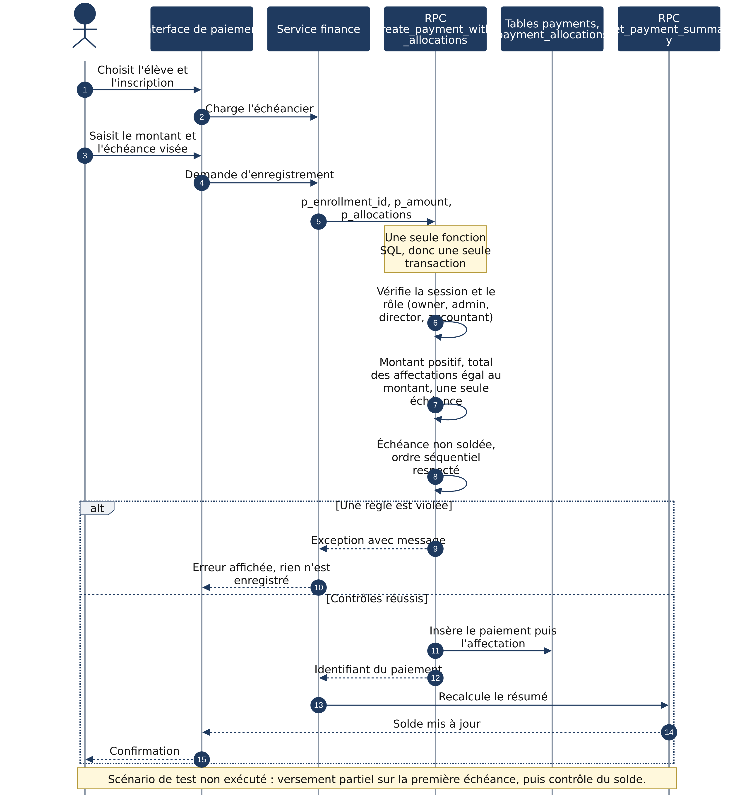
Un paiement partiel sert ici de scénario de test, non de preuve de réussite : un versement sur la première échéance doit réduire le solde de cette échéance sans toucher aux suivantes. Ce scénario figure dans la grille du chapitre 8 avec le statut « non testé ».
L'historique du dépôt montre que ce module a demandé de nombreuses corrections en quelques jours (inscription exonérée affichant tout de même un montant dû, import des élèves pris en charge par l'État, affichage de l'inscription avant les échéances mensuelles). Le tableau 9 les recense. La figure 16 présente le suivi de la scolarité (échéances mensuelles, retards, bouton d'encaissement), avec des comptes de test.
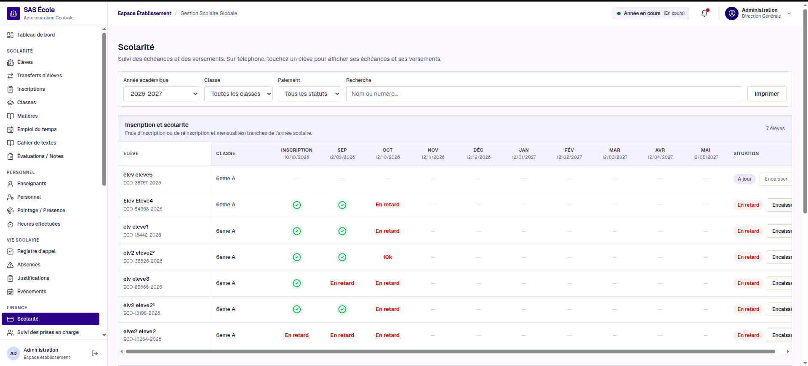
La notion de famille repose sur des relations explicites. Une famille (school_families) regroupe des élèves par l'intermédiaire de student_family_members ; la recherche des frères et sœurs d'un élève passe par search_family_sibling_candidates, qui interroge ces relations. Aucune règle ne déduit une famille d'une simple égalité de noms.
Une règle de réduction (family_discount_rules) fixe un nombre minimal d'enfants (au moins deux), un nombre maximal éventuel, un type (pourcentage ou montant fixe), les catégories de frais concernées (inscription, scolarité, option, caution, autre), une période de validité et un indicateur de cumul. Un organisme payeur (sponsoring_organizations) est associé à des règles de couverture par catégorie (organization_coverage_rules). Pour chaque inscription, les montants réellement déduits sont enregistrés dans des instantanés, ce qui permet de reconstituer le calcul après une modification des règles.
Quatre opérations doivent rester distinctes : le paramétrage des règles, le calcul du reste à payer, l'enregistrement d'un paiement, et la validation de l'inscription ou la confirmation de la prise en charge. La séparation est visible dans le code, où l'inscription est enregistrée avant que réductions et prises en charge ne soient appliquées. Les prises en charge par l'État disposent d'un paramétrage propre (establishment_finance_settings) et d'un import dédié. Les corrections répétées des 10 et 11 octobre montrent que ce domaine est récent et encore en évolution.
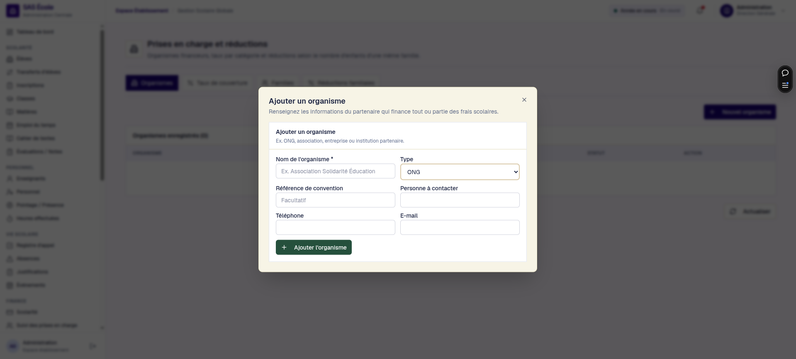
À côté du suivi des frais de scolarité, le dépôt contient des pages de dépenses, de caisse, d'avances, de rapports et de paie sous /ecole/finance, ainsi que des fonctions SQL de paie (generate_payroll_period, create_payroll_payment, create_payroll_advance). Ces fonctions de comptabilité générale et de paie sont distinctes du suivi des frais de scolarité. Elles n'ont pas été validées par un parcours exécuté ; plusieurs services de comptabilité (comptabilite.service.ts, depenses.service.ts, paie.service.ts) utilisent encore le stockage local. Je les présente donc comme un domaine partiellement migré.
L'espace /enseignant donne à l'enseignant la liste de ses établissements, de ses classes, de ses élèves, son planning, ses documents, le cahier de textes et le pointage. Un enseignant peut être rattaché à plusieurs établissements : il en fait la demande, l'établissement l'approuve ou la refuse (teacher_request_establishment, approve_teacher_establishment_request), et le contexte actif est mémorisé dans le navigateur. La figure 18 présente cet espace.
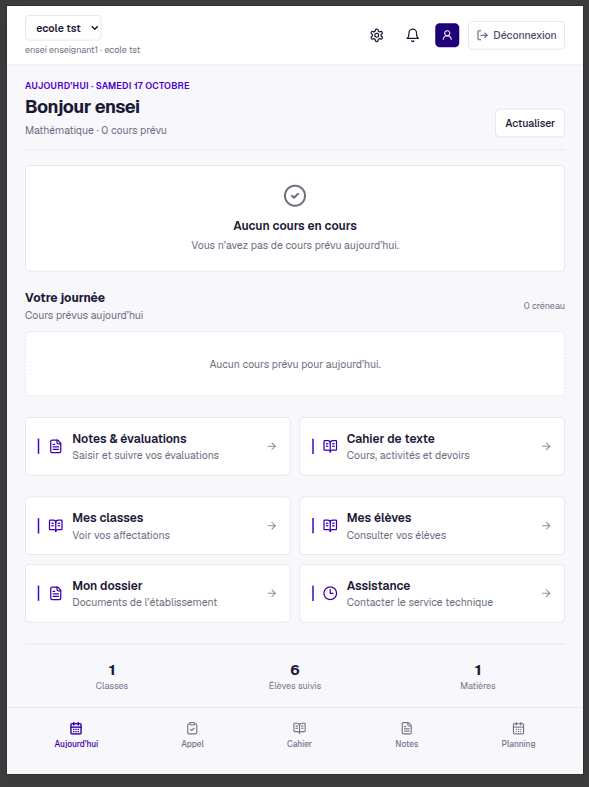
L'appel enregistre, pour une séance, la présence, l'absence ou le retard de chaque élève (record_attendance, record_lesson_attendance). Plusieurs commits du 8 octobre précisent le fonctionnement : vérification des appels par créneau, signalement des cours passés sans appel, distinction entre l'appel de l'enseignant et le rattrapage administratif, blocage du rattrapage des cours futurs. Un parent peut demander un justificatif pour une absence (request_attendance_justification) ; un membre du personnel le valide ou le refuse (review_attendance_justification). La figure 19 décrit ces deux flux. L'appel des élèves ne doit pas être confondu avec le pointage du personnel, traité plus bas.
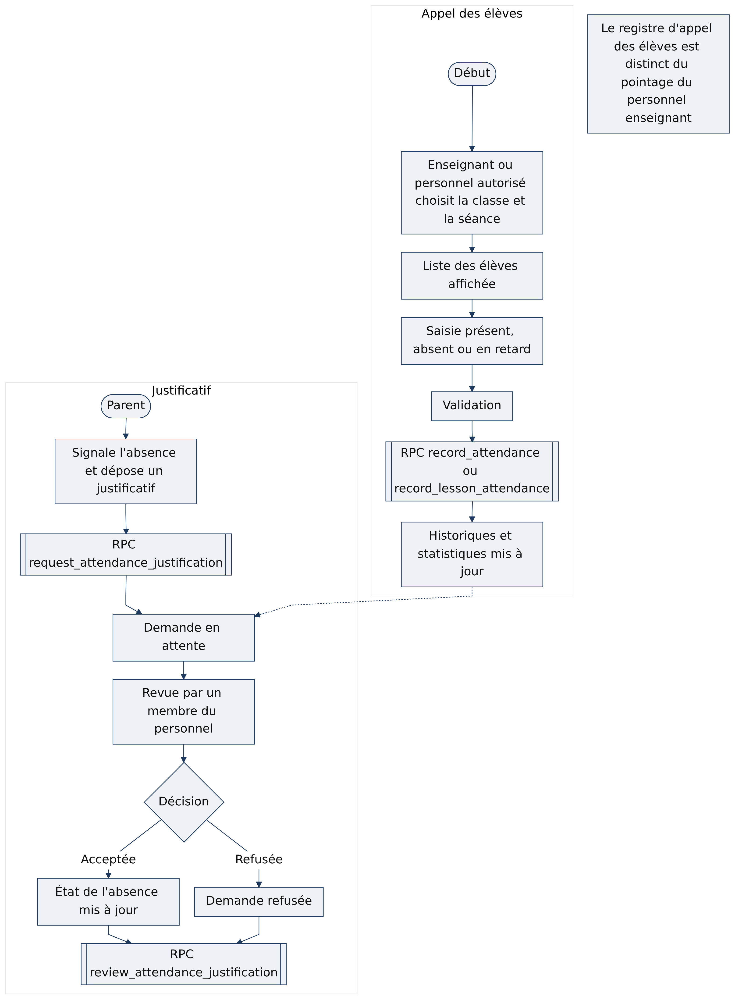
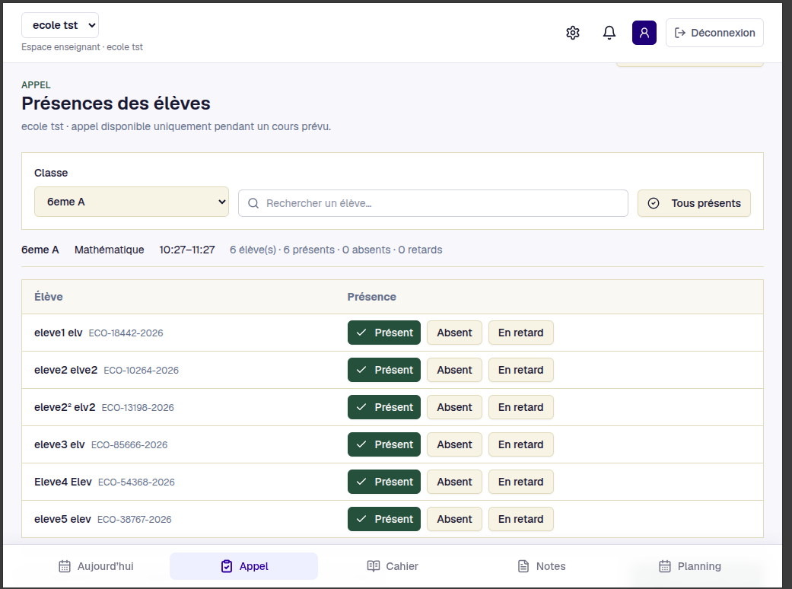
Le pointage vise quatre événements : l'arrivée à l'établissement, le départ, le début d'un cours et la fin d'un cours. L'identification se fait par un code personnel, comparé par empreinte, ou par un QR code temporaire affiché sur un poste central et lu depuis le téléphone de l'enseignant. Pour un début de cours, le système retrouve le cours dans l'emploi du temps de l'enseignant à partir de l'heure, avec une tolérance, puis crée une séance. Les heures créditées dépendent de paramètres : durée complète si le retard ne dépasse pas un seuil, durée réduite sinon. Des alertes sont générées à partir de l'emploi du temps (cours non pointé, cours sans clôture), et une personne autorisée peut clôturer un cours avec un motif. La figure 21 montre les trois premiers parcours et la figure 22 la clôture administrative.
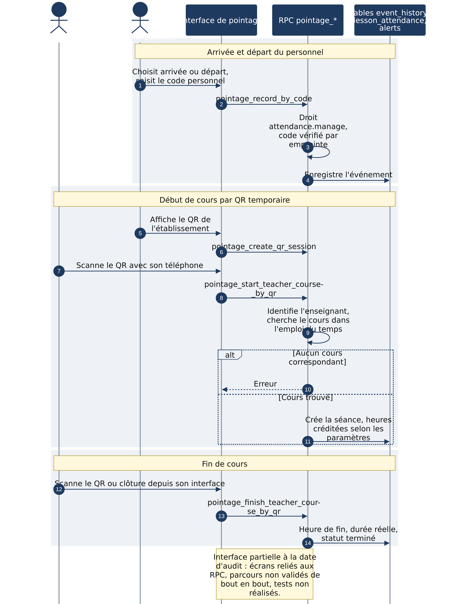
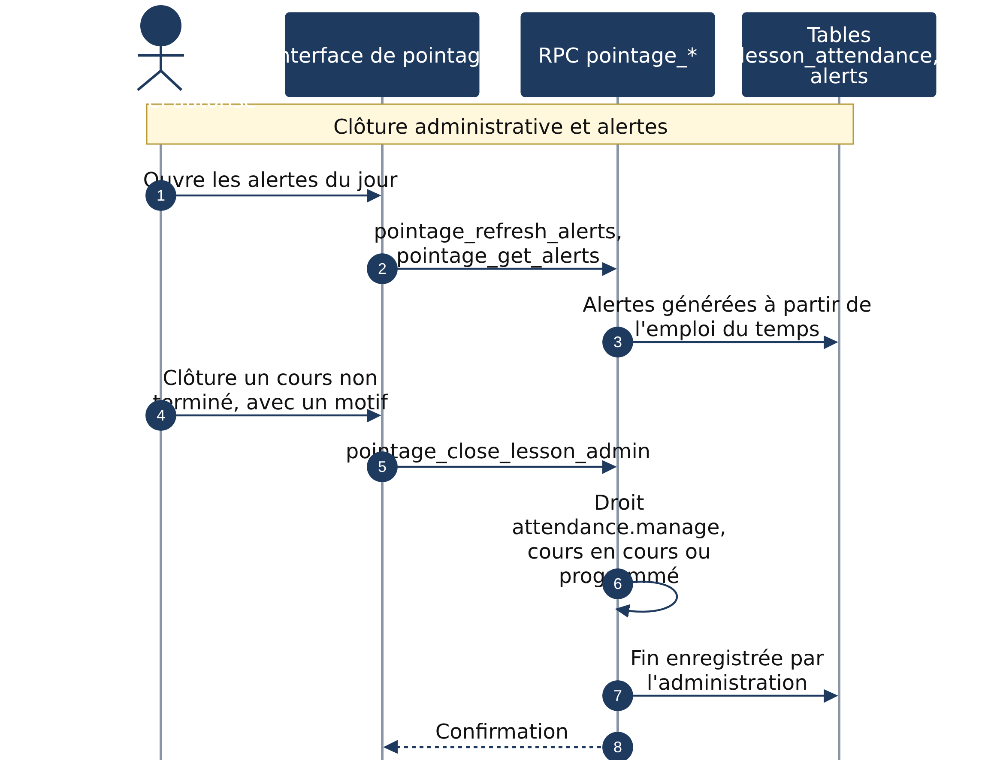
État du module. Le document de travail POINTAGE-IMPLEMENTATION.md indique que le backend a été audité puis renforcé (migration du 3 octobre 2026) et que la phase frontend reste à finaliser. Le code actuel montre des pages reliées aux fonctions SQL de pointage (/ecole/personnel/pointage, la page de lecture associée, la page de l'enseignant). En revanche, les vérifications prévues par ce même document (test du code, du QR, de l'arrivée, du départ, du calcul des heures, des droits RLS, du double pointage) sont toutes non cochées. Le module est donc présenté comme partiel : le backend est présent et durci, l'interface est présente, mais le parcours n'a pas été validé de bout en bout.
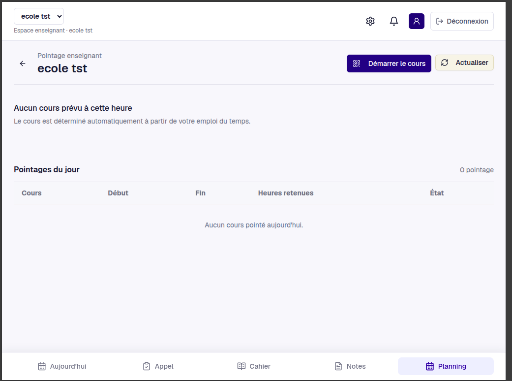
L'espace parent (/parents) est relié à la base de données et à des politiques de sécurité dédiées (plusieurs migrations d'octobre « parent_portal »). Après connexion, le parent choisit un enfant parmi ceux auxquels son compte est lié, et consulte le tableau de bord, les notes, les absences, les paiements, le cahier de textes, l'emploi du temps, les événements, les documents et les notifications. Il peut signaler une absence, déposer un justificatif (stockage parent-documents) et demander un document à l'établissement. L'association d'un enfant se fait par un code ou un identifiant (fonction Edge claim-student).
La feuille de route PARENT-TODO.md est précise sur ce qui reste à faire : vérification de l'identité de l'enfant, bulletins et leur téléchargement, reste à payer, reçus, calendrier scolaire, messagerie complète, service technique, profil et paramètres du compte, et surtout la quasi-totalité des tests finaux (parent avec plusieurs enfants, accès croisé, compte désactivé, tests RLS). Ces éléments sont des limites du projet. Même les points cochés dans ce fichier ne sont pas tenus pour démontrés tant que le parcours n'a pas été exécuté.
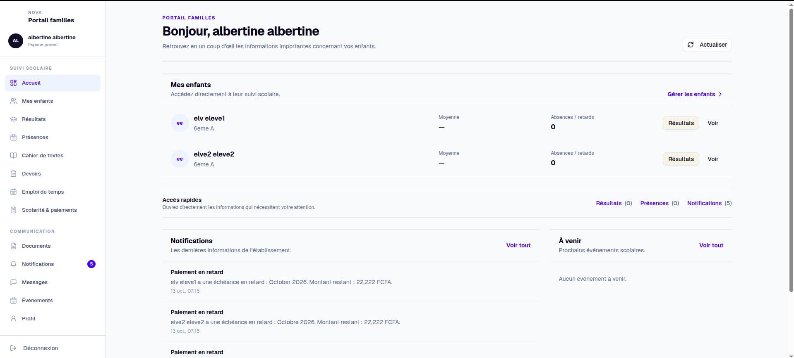
Les documents scolaires et les demandes de documents (school_document_requests, parent_document_requests, parent_document_publications) reposent sur des tables et sur deux espaces de stockage (school-documents, parent-documents) avec des liens signés. Les notifications sont lues et marquées comme lues par des fonctions SQL ; des migrations d'octobre ajoutent des notifications automatiques, notamment pour les paiements en retard. La messagerie s'appuie sur conversations et messages. La page des documents de l'espace établissement référence à la fois le stockage local et Supabase.
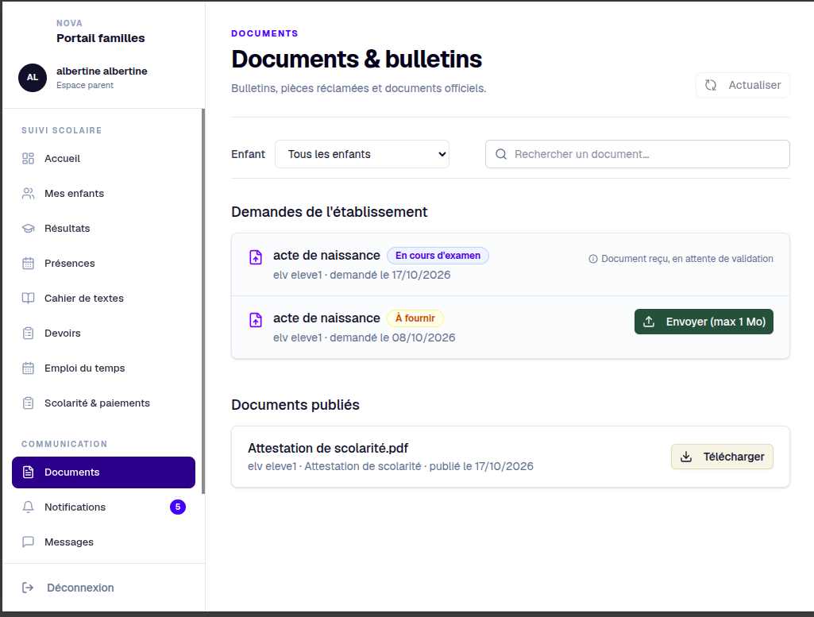
J'ai structuré l'application autour des pages et composants d'interface, des hooks de domaine et des services. Le dépôt consulté contient environ 150 pages applicatives, 56 fichiers de services dans services/ et 21 services dans lib/supabase/services/. Supabase est intégré dans plusieurs domaines métier. L'état de la persistance doit être décrit module par module : la présence de quelques références à localStorage ne signifie pas que toute l'application repose encore sur le stockage du navigateur, et une page peut déléguer ses accès aux services. La figure 26 représente cette organisation.
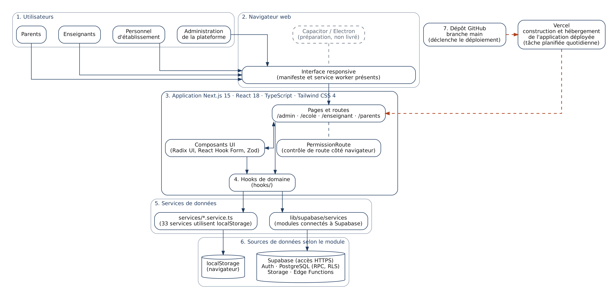
| Technologie | Rôle exact |
|---|---|
| Next.js 15 (15.5.24) | Cadre applicatif : pages, routes, rendu et tâche planifiée (route interne appelée par Vercel). |
| React 18 et TypeScript 5 | Composants d'interface et typage. Le fichier next.config.js désactive toutefois le blocage du build sur les erreurs TypeScript et ESLint. |
| Tailwind CSS 4 | Mise en forme et adaptation aux tailles d'écran. |
| Radix UI, Lucide React | Composants d'interface accessibles et icônes. |
| React Hook Form et Zod | Gestion et validation des formulaires. |
Supabase (supabase-js) | Authentification, base PostgreSQL, fonctions SQL (RPC), stockage de fichiers et fonctions Edge, selon les modules. |
localStorage | Stockage dans le navigateur pour les modules non encore migrés ; données propres à chaque appareil. |
| jsPDF, html2canvas, PapaParse | Génération de documents PDF et import de fichiers CSV côté navigateur. |
| Jest et ts-jest | Tests automatisés (quatre fichiers). Le paquet jest lui-même n'est pas déclaré dans package.json. |
| Vercel et GitHub | Hébergement et déploiement à partir de la branche main ; tâche planifiée quotidienne. |
| Capacitor, Electron | Préparation d'un conteneur mobile et d'une version de bureau (dossiers android, ios, electron) ; aucune application finale n'est démontrée. |
L'application est une application web responsive. Un manifeste d'application web et un service worker de mise en cache de la page d'accueil et de la page hors ligne sont présents ; le comportement hors ligne n'a pas été testé. Ce n'est pas une application mobile native.
Dire que l'application « utilise Supabase » est insuffisant, parce que cinq situations différentes sont possibles. L'existence d'un schéma SQL n'implique pas qu'une page l'utilise. Une fonctionnalité reliée à Supabase n'a pas pour autant une interface terminée. Une politique RLS présente dans une migration n'est pas une règle vérifiée en situation. Une interface terminée n'est pas une fonctionnalité testée. Et un déploiement en ligne n'atteste que la disponibilité d'une version, non sa conformité.
Pour analyser la persistance, j'ai examiné les références au backend dans les espaces /admin, /ecole, /enseignant et /parents. Une recherche textuelle reste indicative : une page peut passer par un hook ou un service et ne contenir aucun appel direct à Supabase. Je ne reprends donc pas les anciens totaux issus d'une version précédente comme s'ils décrivaient nécessairement la version actuelle. Le constat à retenir est que Supabase est réellement intégré à plusieurs domaines, tandis que les éventuels mécanismes locaux doivent être confirmés dans les modules concernés avant d'être présentés comme une limite globale.
| Module | Source de données | Éléments relevés |
|---|---|---|
| Authentification, contexte de compte, administration de plateforme | Supabase (Auth, RPC) | Service authentification.supabase.service.ts ; pages /admin/* pour la plupart |
| Élèves, inscriptions, transferts, frais, paiements, familles, organismes | Supabase (RPC, tables) | Services lib/supabase/services ; hooks useStudents, useEnrollment, usePayments |
| Structure académique, matières, emploi du temps | Supabase (tables) | Services *.supabase.service.ts, hook useAcademicStructure |
| Présences, justificatifs, pointage, cahier de textes | Supabase (RPC) | Hook useAttendance ; services pointage, enseignant-pointage, ecole-cahier |
| Espaces enseignant et parent | Supabase (RPC, tables, stockage) | Hook use-parent-portal ; services enseignant-portal, teacher-account |
| Classes, documents, archivage, inscriptions, paramètres, tableau de bord de l'établissement | Mixte | Pages référençant à la fois le stockage local et Supabase |
| Fiche enseignant, ajout d'enseignant, évaluations, événements, heures vacataires et paramètres de plateforme | À vérifier module par module | Établir l'état actuel à partir des appels effectifs des pages et services ; l'ancien décompte de treize pages n'est pas repris comme une mesure actuelle. |
La figure 27 donne la vue fonctionnelle : quatre espaces, quatre services transversaux (authentification et permissions, notifications, documents, support), puis les deux sources de données. Elle ne représente aucun service distinct : l'application est un ensemble unique déployé sur Vercel, qui interroge Supabase depuis le navigateur.
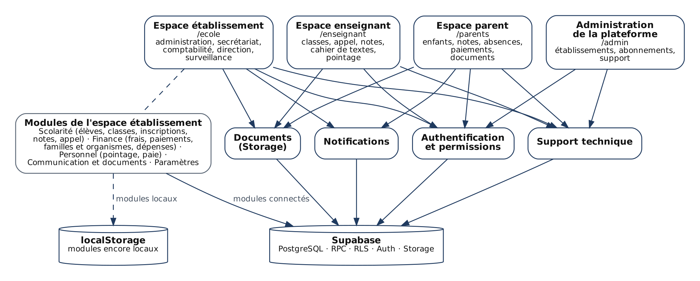
La sécurité repose sur plusieurs couches dont la solidité est inégale. Les contrôles faits dans le navigateur (composant PermissionRoute, masquage de boutons) améliorent l'usage mais ne protègent pas les données, puisqu'un utilisateur peut les contourner. La protection réelle vient de la base. Les migrations du dépôt comptent 136 définitions de fonctions, dont plus de 90 déclarées avec les droits de leur propriétaire (security definer), 156 instructions create policy et 19 déclencheurs. Les fonctions de pointage, de paiement et de justificatif vérifient explicitement l'utilisateur et son rôle avant d'agir. Plusieurs migrations d'août à octobre sont consacrées à durcir les accès, notamment pour le portail parent (isolation parent-enfant, isolation entre établissements, suppression de dépendances circulaires dans les politiques) et pour retirer des droits d'exécution aux utilisateurs anonymes.
Cette protection ne suffit pas à elle seule à garantir la sécurité de l'ensemble. Trois points restent à renforcer ou à vérifier :
private.has_permission ne connaît pas les noms de permission settings.read, settings.manage et payments.read, alors que des politiques récentes (familles, organismes payeurs) les emploient. Une migration antérieure avait déjà remplacé ces noms pour une autre table. Selon la définition réellement active dans la base déployée, ces politiques pourraient être plus restrictives que prévu. Ce point doit être contrôlé sur la base.get-parent-children, manage-teacher-account, approve-establishment-request) n'y figurent pas non plus.Aucun secret (clé de service, jeton privé) n'est utilisé côté navigateur dans le code examiné ; la clé de service n'apparaît que dans une configuration serveur lue depuis l'environnement. Les valeurs publiques de connexion sont fournies en secours dans le code client, ce qui est sans risque pour des valeurs conçues pour être publiques, mais mérite d'être mentionné.
J'ai réalisé des vérifications pendant le développement, et le dépôt conserve des tests automatisés de services (comptabilité, enseignants, messages et notifications), ainsi que des scripts de tests manuels portant notamment sur l'authentification, les modales, les emplois du temps et la persistance. Des vérifications de compilation et de déploiement ont également été effectuées sur des versions antérieures. Lors de cette revue documentaire, je n'ai toutefois pas pu relancer de manière fiable toute la suite Jest, car l'installation des dépendances a échoué dans l'environnement utilisé. Cette difficulté de reproduction ne signifie donc pas qu'aucun test n'a été réalisé ; elle signifie que les résultats détaillés de tous les scénarios ne sont pas tous disponibles dans cette revue. La grille qui suit recense les scénarios à rejouer ou à documenter pour compléter la validation.
La grille du tableau 8 réunit les scénarios de validation métier. Des tests manuels et des vérifications ciblées ont été réalisés pendant le développement. Les statuts indiquent toutefois si le résultat précis du scénario est conservé et reproductible pour la version examinée. « Non rejoué lors de cette revue » ne signifie pas que le scénario n'a jamais été testé ; cela signifie qu'aucune preuve exploitable de son exécution sur cette version n'est annexée ici. Le code qui implémente le comportement attendu n'est pas, à lui seul, une preuve de validation.
| ID | Scénario | Précondition | Étapes | Résultat attendu | Résultat observé | Statut | Preuve ou référence |
|---|---|---|---|---|---|---|---|
| T01 | Connexion d'un membre d'établissement | Compte actif et configuré | Saisir e-mail et mot de passe, valider | Accès à l'espace établissement | Non rejoué lors de cette revue | Résultat non consigné pour ce scénario | authentification.supabase.service.ts |
| T02 | Connexion avec identifiants invalides | Aucune | Saisir un mot de passe erroné | Message « Email ou mot de passe incorrect » | Non rejoué lors de cette revue | Résultat non consigné pour ce scénario | Même service |
| T03 | Redirection selon le type de compte | Un compte de chaque type | Se connecter avec chacun | Redirection vers /admin, /etablissement, /enseignant, /parents/tableau-de-bord | Non rejoué lors de cette revue | Résultat non consigné pour ce scénario | getRedirectionPath |
| T04 | Page non autorisée pour le rôle | Compte secrétariat | Ouvrir une page financière | Redirection vers le tableau de bord | Non rejoué lors de cette revue | Résultat non consigné pour ce scénario | PermissionRoute.tsx |
| T05 | Inscription d'un nouvel élève | Année, classe, plan de frais définis | Remplir et valider le formulaire | Élève, inscription et échéancier créés | Non rejoué lors de cette revue | Résultat non consigné pour ce scénario | RPC d'inscription |
| T06 | Inscription d'un élève pris en charge par l'État | Option activée pour l'établissement | Choisir le mode « État », valider | Inscription créée sans montant familial | Non rejoué lors de cette revue | Résultat non consigné pour ce scénario | Migration 20261010150000 |
| T07 | Paiement partiel sur la première échéance | Inscription avec échéancier | Saisir un montant inférieur à l'échéance | Solde de l'échéance réduit du montant, suivantes inchangées | Non rejoué lors de cette revue | Résultat non consigné pour ce scénario | create_payment_with_allocations |
| T08 | Paiement par un rôle non autorisé | Compte secrétariat | Tenter d'enregistrer un paiement | Refus « Permission insuffisante » | Non rejoué lors de cette revue | Résultat non consigné pour ce scénario | Même fonction |
| T09 | Réduction familiale | Règle active, deux enfants d'une famille | Inscrire le second enfant | Réduction appliquée et instantané enregistré | Non rejoué lors de cette revue | Résultat non consigné pour ce scénario | Migration 20261011210000 |
| T10 | Prise en charge par un organisme | Organisme et règle actifs | Inscrire avec l'organisme | Part de l'organisme et part de la famille calculées | Non rejoué lors de cette revue | Résultat non consigné pour ce scénario | Même migration |
| T11 | Appel d'une séance | Enseignant avec classe attribuée | Saisir présent, absent, retard ; valider | Présences enregistrées, statistiques mises à jour | Non rejoué lors de cette revue | Résultat non consigné pour ce scénario | record_attendance |
| T12 | Justificatif d'absence | Absence enregistrée, parent lié | Demande par le parent, revue par le personnel | Statut accepté ou refusé | Non rejoué lors de cette revue | Résultat non consigné pour ce scénario | Migrations 20261008123000, 20261008143000 |
| T13 | Isolation parent-enfant | Deux parents, deux enfants | Chercher les données de l'enfant de l'autre | Aucune donnée renvoyée | Non rejoué lors de cette revue | Résultat non consigné pour ce scénario | Migrations parent_portal |
| T14 | Isolation entre établissements | Deux établissements | Tenter de lire les données de l'autre | Aucune donnée renvoyée | Non rejoué lors de cette revue | Résultat non consigné pour ce scénario | Politiques RLS |
| T15 | Pointage d'arrivée par code | Code personnel émis | Saisir le code sur le poste central | Événement enregistré | Non rejoué lors de cette revue | Résultat non consigné pour ce scénario | pointage_record_by_code |
| T16 | Début de cours par QR | Cours à l'emploi du temps | Scanner le QR dans la tolérance | Séance créée | Non rejoué lors de cette revue | Résultat non consigné pour ce scénario | pointage_start_teacher_course_by_qr |
| T17 | Clôture administrative d'un cours | Cours non terminé | Clôturer avec un motif | Cours clôturé, événement tracé | Non rejoué lors de cette revue | Résultat non consigné pour ce scénario | pointage_close_lesson_admin |
| T18 | Tests automatisés Jest | Dépendances installées | Lancer npm test | Quatre fichiers de test réussis | Installation des dépendances impossible dans l'environnement de vérification | Résultat non consigné pour ce scénario | tests/ |
| T19 | Disponibilité de la version en ligne | Aucune | Requête sur l'adresse déployée | Page d'accueil renvoyée | Page d'accueil « NOVA » reçue le 14 octobre 2026 ; connexion non essayée | Partiel | Requête HTTP du 14 octobre 2026 |
| T20 | Affichage sur téléphone | Téléphone ou émulation | Parcourir les pages principales | Mise en page utilisable | Non rejoué lors de cette revue | Résultat non consigné pour ce scénario | Classes Tailwind responsive |
Le tableau 9 rassemble les anomalies qui ressortent de l'historique du dépôt consulté jusqu'au commit d7905796b35dc7729c08b62c9aee7df39a523ef4 et de l'examen du code. Pour les premières, la cause n'est pas détaillée dans les messages et la correction n'a pas été rejouée : la colonne de vérification l'indique. Les secondes sont des écarts constatés à la lecture, restés ouverts.
| Symptôme | Cause (confirmée ou supposée) | Correction | Vérification |
|---|---|---|---|
| Plantage au chargement de la page des élèves | Non précisée | Commit du 11 octobre « Corriger le plantage au chargement de la page élèves » | Non rejoué |
| Montant dû affiché pour une inscription exonérée ; options mal cochées | Non précisée | Commits du 10 octobre (inscription exonérée, options scolaires) | Non rejoué |
| Import des élèves pris en charge par l'État | Non précisée | Commits du 10 octobre ; migration 20261010153000 | Non rejoué |
| Statistiques d'inscription fausses selon l'année académique | Non précisée | Commits du 11 octobre (filtre de période, pagination, statistiques) | Non rejoué |
| Politiques RLS du portail parent : dépendances circulaires | Dépendances entre politiques, d'après le message du commit | Commits du 8 octobre ; migrations fix_parent_portal_rls_all_domains, fix_parent_base_access | Non rejoué |
| Appel enseignant confondu avec rattrapage administratif | Non précisée | Commits du 8 octobre | Non rejoué |
Noms de permission des politiques récentes non définis dans la dernière version versionnée de has_permission | Définition de fonction non mise à jour (supposée) | Aucune correction constatée | À vérifier sur la base déployée |
| Erreurs TypeScript et ESLint ignorées au build | Options ignoreBuildErrors et ignoreDuringBuilds | Aucune correction constatée | Ouvert |
| Feuille de route indiquant un middleware de protection des routes qui n'existe pas | Case cochée à tort dans IMPLEMENTATION-ECOLE.md | Aucune correction constatée | Ouvert |
jest et electron absents de package.json alors que des scripts les appellent | Dépendances non déclarées | Aucune correction constatée | Ouvert |
pnpm-lock.yaml désynchronisé de package.json | Fichier de verrouillage non régénéré | Aucune correction constatée | Ouvert |
Le tableau 10 qualifie chaque fonctionnalité selon quatre niveaux. Opérationnelle vérifiée suppose un parcours précis exécuté avec un résultat consigné. Des vérifications manuelles et techniques ont bien été effectuées pendant le développement, mais les preuves disponibles ne permettent pas de classer tous les parcours métier dans cette catégorie. Les scénarios de la grille ci-dessous sont indiqués comme non rejoués ou non documentés lorsqu'aucun résultat spécifique n'est conservé. Partielle désigne une fonction dont le code ou la documentation indique des éléments manquants. À vérifier désigne une fonction présente dans le code, reliée à la base, dont le fonctionnement n'a pas été constaté. Non implémentée désigne une fonction absente du code.
| Fonctionnalité | Niveau | Constat |
|---|---|---|
| Authentification et récupération de mot de passe | À vérifier | Service et pages présents ; aucun parcours rejoué |
| Contrôle d'accès par rôle côté navigateur | À vérifier | PermissionRoute présent |
| Middleware Next.js de protection des routes | Non implémentée | Aucun fichier middleware |
| Élèves, classes, structure académique | À vérifier | Reliés à la base ; corrections récentes |
| Inscription, réinscription, transfert | À vérifier | Fonctions SQL présentes ; évolutions du 11 octobre |
| Frais, échéanciers, paiements | À vérifier | Fonction de paiement transactionnelle ; non rejouée |
| Familles, réductions, organismes payeurs, élèves de l'État | À vérifier | Migrations du 11 octobre ; corrections répétées |
| Appel et justificatifs | À vérifier | Fonctions SQL présentes ; non rejouées |
| Notes et évaluations | À vérifier | Services branchés ; une page encore locale |
| Bulletins | Partielle | Page présente côté école ; bulletins côté parent non cochés |
| Pointage du personnel enseignant | Partielle | Backend durci ; interface à finaliser selon la documentation ; tests non réalisés |
| Paie, avances, comptabilité générale | Partielle | Fonctions SQL présentes ; plusieurs services encore locaux |
| Espace parent | Partielle | Base et politiques présentes ; nombreux points non cochés dans la feuille de route |
| Espace enseignant (affichage sur téléphone) | À vérifier | Pages reliées à la base ; fiche enseignant côté école encore locale |
| Documents, notifications, messagerie | À vérifier | Tables et stockage présents ; page documents mixte |
| Administration de la plateforme | À vérifier | Fonctions platform_admin_* présentes |
| Application mobile native (Capacitor) | Non implémentée | Dossiers générés ; aucune livraison démontrée |
| Version de bureau (Electron) | Non implémentée | Fichiers de préparation seulement |
J'ai réalisé une application web multi-espaces d'environ 150 pages applicatives, adossée à une base PostgreSQL gérée par Supabase. Le dépôt contient 91 fichiers de migration SQL ; l'historique de la base active enregistre 228 migrations. La base compte 87 tables publiques, toutes protégées par RLS, 226 politiques RLS et 232 fonctions SQL. Supabase Auth gère l'authentification et plusieurs opérations sensibles s'appuient sur des fonctions SQL transactionnelles. Les familles, les réductions et les prises en charge par des organismes font partie des domaines développés. L'application est déployée sur Vercel à partir du dépôt GitHub. Sur le plan personnel, ce projet m'a fait parcourir tout le cycle d'un logiciel de gestion : modélisation, développement par modules, migration progressive d'un stockage local vers une base, durcissement des accès.
Les difficultés ont surtout porté sur la cohérence des données et des droits. Calculer un reste à payer exact quand se combinent paiements partiels, réductions familiales, exonérations et prises en charge a demandé de nombreuses corrections en quelques jours. Garantir qu'un parent ne voie que ses enfants et qu'un utilisateur ne voie que son établissement a obligé à reprendre plusieurs fois les politiques de sécurité. Enfin, la migration d'un stockage local vers une base partagée s'est faite module par module, ce qui explique que les deux coexistent encore.
| Domaine | Limite constatée | Perspective |
|---|---|---|
| Persistance | Des références au stockage local subsistent dans le code, mais le périmètre exact doit être vérifié module par module ; les anciens décomptes de pages et de services ne sont pas repris comme des mesures actuelles. | Terminer la migration module par module, en commençant par la comptabilité et la fiche enseignant. |
| Schéma versionné | La création des tables de base et trois fonctions Edge ne sont pas dans le dépôt. | Exporter le schéma initial en migration et versionner les fonctions Edge. |
| Contrôle d'accès | Contrôle dans le navigateur ; noms de permission à harmoniser entre l'interface et la base ; deux politiques récentes à vérifier. | Tester explicitement l'isolation entre établissements et entre parents ; aligner les nomenclatures. |
| Tests | Quatre fichiers de tests Jest et plusieurs scripts manuels sont présents. Des tests manuels et des vérifications ciblées ont été réalisés pendant le développement ; la suite complète n'a pas été reproduite de façon fiable lors de la dernière revue. | Conserver les résultats datés, rejouer la suite automatisée dans un environnement stable et compléter les tests sur les paiements, les permissions et les parcours parents. |
| Qualité de build | Erreurs de types et d'analyse statique ignorées au build. | Corriger les erreurs puis réactiver ces contrôles. |
| Pointage | Interface à finaliser ; vérifications prévues non cochées. | Valider le code, le QR, la clôture et le calcul des heures sur un cas réel. |
| Espace parent | Bulletins, reçus, messagerie, calendrier, profil et tests finaux non démontrés. | Compléter les points de la feuille de route, puis tester l'accès croisé. |
| Mobile et bureau | Conteneurs préparés mais non livrés. | Décider du maintien de ces pistes ; sinon retirer les dossiers générés. |
| Hygiène du dépôt | Journaux de build, fichiers de test et fichiers temporaires à la racine. | Nettoyer le dépôt et vérifier que les fichiers de test ne contiennent aucune donnée réelle. |
Les perspectives sont des pistes de travail et non des fonctions réalisées.
Ce projet partait d'une question concrète : comment centraliser la gestion administrative d'un établissement scolaire tout en limitant l'accès de chacun à ce que son rôle justifie. Les éléments livrés y répondent en partie. Les inscriptions, les paiements et leurs échéanciers, les présences, le pointage, les familles et les espaces par rôle existent dans le code, reliés pour la plupart à une base PostgreSQL protégée par des fonctions et des politiques d'accès.
Je ne peux pas, en revanche, affirmer davantage que ce que j'ai pu établir. Des vérifications manuelles, des tests ciblés et des contrôles de la base ont été effectués pendant le développement ; tous les parcours métier n'ont toutefois pas été rejoués avec des résultats conservés pour cette version. Des mécanismes de stockage local subsistent dans certains endroits, le pointage et plusieurs parcours de l'espace parent demandent encore une validation complète, et les règles RLS doivent continuer à être testées en situation. Le travail le plus utile à mener maintenant n'est pas d'ajouter des fonctions, mais de tester ce qui existe, de fermer les écarts relevés au chapitre 8 et de terminer la migration des données.
Ce projet m'a surtout appris qu'une application de gestion se juge moins à la quantité de ses écrans qu'à la fiabilité de ses montants et au respect des droits de chacun.
main, version consultée au 17 octobre 2026 : github.com/darlyblake/Syst-me-Administratif-Scolaire.README.md, AGENTS.md, docs/ARCHITECTURE.md, docs/ROADMAP.md, docs/ARCHITECTURE-MODULES.md, docs/INTERFACE-UI-UX.md.IMPLEMENTATION-ECOLE.md, POINTAGE-IMPLEMENTATION.md, PARENT-TODO.md, TODO.md, AUDIT_SETTINGS.md.supabase/migrations. Le projet Supabase actif présentait 12 fonctions Edge actives au relevé, dont certaines ne sont pas versionnées dans le dépôt ; je distingue donc le code disponible dans GitHub du code réellement déployé.app/, hooks/, services/, lib/, providers/, components/auth/ et tests/.Le tableau suivant liste les 28 tables dont la création figure dans un fichier de migration versionné, avec la date de la migration (au format année, mois, jour). Les autres tables du schéma déployé existaient avant la première migration versionnée.
| Table | Migration | Table | Migration |
|---|---|---|---|
platform_admins | 2026-08-31 | pointage_payroll_fiches | 2026-10-03 |
establishment_finance_settings | 2026-08-31 | teacher_lesson_entries | 2026-10-04 |
attendance_justification_requests | 2026-09-01 | teacher_homework | 2026-10-04 |
parent_document_requests | 2026-09-04 | parent_document_publications | 2026-10-04 |
parent_document_request_attachments | 2026-09-04 | school_document_requests | 2026-10-08 |
establishment_fee_settings | 2026-09-20 | attendance_summary_settings | 2026-10-08 |
establishment_fee_overrides | 2026-09-20 | student_transfer_requests | 2026-10-11 |
payroll_academic_year_settings | 2026-09-30 | sponsoring_organizations | 2026-10-11 |
teacher_establishment_requests | 2026-10-01 | organization_coverage_rules | 2026-10-11 |
pointage_settings | 2026-10-03 | school_families | 2026-10-11 |
pointage_access_codes | 2026-10-03 | student_family_members | 2026-10-11 |
pointage_qr_sessions | 2026-10-03 | family_discount_rules | 2026-10-11 |
pointage_alerts | 2026-10-03 | enrollment_discount_snapshots | 2026-10-11 |
pointage_event_history | 2026-10-03 | organization_coverage_snapshots | 2026-10-11 |
L'interface appelle 105 fonctions SQL distinctes. Le tableau les regroupe par domaine, avec leur nombre ; la liste complète se retrouve en cherchant .rpc( dans le code.
| Domaine | Nombre | Exemples |
|---|---|---|
| Finance, familles et prises en charge | 13 | add_enrollment_option, create_payment_with_allocations, create_tuition_plan_server_validated, create_tuition_plan_with_billing, finance_movement_summary, get_effective_enrollment_fees, … |
| Enseignants | 8 | approve_teacher_establishment_request, list_active_establishments_for_teacher, reject_teacher_establishment_request, teacher_classes, teacher_context, teacher_create_profile, … |
| Élèves et inscriptions | 14 | assign_students_to_class, change_student_enrollment_class, create_student, deactivate_student, find_duplicate_student_for_enrollment, get_enrollment_financial_summary, … |
| Transferts d'élèves | 5 | can_finalize_student_transfers, create_student_transfer, finalize_student_transfer, list_student_transfers, review_student_transfer |
| Présences et justificatifs | 8 | correct_attendance_record, get_attendance_report_data, get_attendance_statistics, list_attendance_history_paginated, record_attendance, record_lesson_attendance, … |
| Personnel et paie | 10 | create_payroll_advance, create_payroll_payment, create_staff, deactivate_staff, generate_payroll_period, get_establishment_members, … |
| Plateforme et authentification | 20 | create_platform_establishment, get_my_auth_context, monitor_subscription_expirations, platform_admin_dashboard_summary, platform_admin_delete_establishment, platform_admin_establishment_overview, … |
| Support technique | 4 | create_support_request, get_establishment_support_requests, get_support_messages, reply_support_request |
| Pointage | 19 | get_teacher_weekly_pointage, pointage_close_lesson_admin, pointage_create_qr_session, pointage_current_teacher_course, pointage_daily_report, pointage_ensure_access_codes, … |
| Notifications et documents | 4 | list_notifications_paginated, mark_notification_read, parent_create_document_request, unread_notification_count |
Chaque diagramme du dossier est fourni dans un format modifiable (fichiers Graphviz .dot, Mermaid .mmd ou script Python pour le diagramme de cas d'utilisation), avec un export en SVG et en PNG haute résolution. Les fichiers se trouvent dans le dossier diagrammes/ livré avec ce dossier.
Les emplacements de captures d'écran sont signalés par un cadre vide numéroté. L'auteur les complète avec des captures de données fictives ou anonymisées, en déposant les fichiers image dans le dossier captures/ sous les noms indiqués dans le document d'accompagnement LISTE_CAPTURES_A_AJOUTER.md.